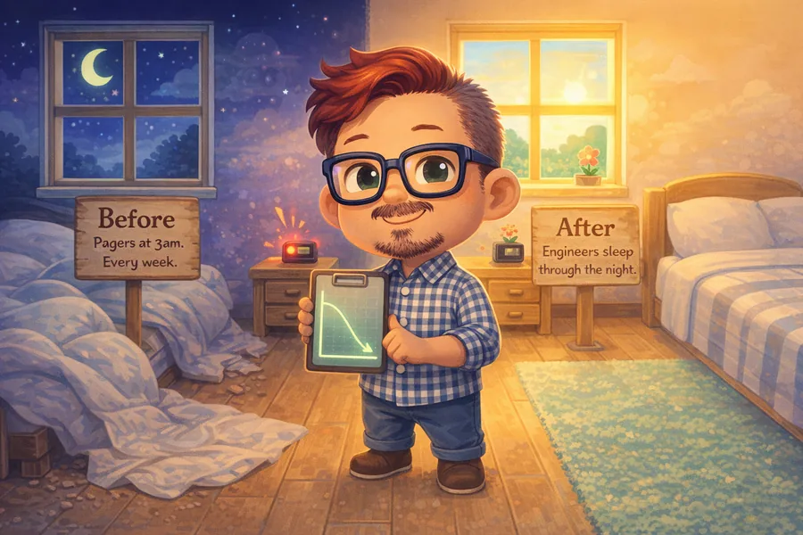

"He walks into ambiguous situations, identifies what hasn't been addressed, and gets results — all while getting a smile out of everyone in the room."
Brianna Gamp · Information Security Leader
The work, briefly
An English major's career, in disguise.
From novels to dashboards, the work never really changed. It starts with reading closely for what isn't said and staying on a question until the real one surfaces — then figuring out how to explain it so the team can move. English-major roots, business-analyst present, stubbornly curious throughout.
Current role
Principal Business Analyst, SFMTA
Favorite kind of problem
The blank-page kind — making something brand new.
Career Apple 7 yrs · Consulting 4 · Elegrity 3 · eBay 1.5 — now SFMTA
Education MS Business Analytics, Saint Mary's · BA English Lit, UChicago
Selected work

Patterns
The questions I keep asking, the two kinds of problems that keep showing up, and how I think about giving an org just enough structure.
See the patterns →
About Nabil
Cats, tea, English literature, three pillars as described by Mary Salome, feminist science fiction off the clock, and twenty years of testimonials.
Meet Nabil →